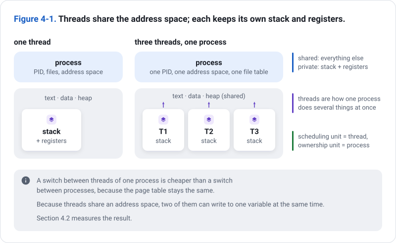

4. Threaded Execution and Concurrency Hazards
While a process provides a fundamental unit of isolation, it is often insufficient for expressing fine-grained parallelism. To achieve concurrency within a single execution context, a process employs threads, independent sequences of instructions that operate within the same administrative boundaries.
4.1 Shared Address Space and the Loss of Intra-Process Isolation
A thread is characterized by a dual nature: it possesses a private architectural state, including a unique program counter, register set, and stack, yet it operates within the shared address space of its parent process. This architecture allows threads to communicate via shared memory, allowing one thread to observe the updates of another via ordinary loads and stores, without the overhead of inter-process communication (IPC) or expensive system calls.
However, this efficiency comes at a significant cost to safety. While hardware and the kernel provide robust isolation between distinct processes via page tables, no such mechanism exists to isolate threads within a single process. Consequently, the shared memory model exposes the program to data races: conditions where the correctness of a program depends on the non-deterministic interleaving of instructions across multiple threads. When multiple threads concurrently access and modify the same memory location without proper synchronization, the integrity of the data is compromised by the atomicity gaps inherent in the CPU’s execution cycle.

4.2 Atomicity and the Resolution of Data Races
The most fundamental concurrency hazard arises from the decomposition of high-level operations into discrete machine instructions. An operation that appears indivisible in a high-level language, such as an integer increment, typically translates to a sequence of load, modify, and store instructions. In a multi-core environment, if two threads interleave these steps, one thread’s intermediate state may be overwritten by another, resulting in a “lost update.”
To mitigate this, modern processor architectures provide atomic instructions, such as lock xadd on x86 or ldaddal on arm64, which guarantee that a sequence of operations is perceived by the rest of the system as a single, indivisible unit. These instructions ensure that no other core can observe or intervene in the memory location during the operation.
It is critical to distinguish between atomicity and memory ordering. Atomicity refers to the indivisibility of a single operation, ensuring no partial states are observable. Ordering, conversely, governs the visibility and sequence of effects on different memory locations across threads. An operation can be atomic without being ordered, a distinction that is central to the design of high-performance concurrent algorithms and the use of relaxed memory models.

Listing 4-1. Eight threads increment one counter without synchronization (C++20).
// ch04/race.cpp: eight threads increment one counter without synchronization.
// Each iteration is a read, an add, and a write, forced to memory with volatile.
#include <cstdint>
#include <iostream>
#include <thread>
#include <vector>
int main() {
constexpr int kThreads = 8;
constexpr uint64_t kIters = 20'000'000;
volatile uint64_t counter = 0; // shared, no protection
std::vector<std::thread> workers;
for (int i = 0; i < kThreads; ++i) {
workers.emplace_back([&counter] {
for (uint64_t j = 0; j < kIters; ++j) {
counter = counter + 1; // read-modify-write, not atomic
}
});
}
for (auto& t : workers) t.join();
uint64_t observed = counter;
std::cout << "expected " << (kThreads * kIters)
<< ", observed " << observed << "\n";
}
Output 4-1. One run. The observed value differs from run to run.
expected 160000000, observed 39242198
Listing 4-2. The same race in Rust, written with unsafe.
// ch04/race.rs: the unsynchronized counter in Rust. Reading or writing a
// `static mut` requires an unsafe block; the data race itself is real.
// read_volatile/write_volatile keep each iteration's read and write in memory.
use std::ptr::{addr_of, addr_of_mut, read_volatile, write_volatile};
use std::thread;
static mut COUNTER: u64 = 0;
fn main() -> Result<(), Box<dyn std::error::Error>> {
const THREADS: usize = 8;
const ITERS: u64 = 20_000_000;
let mut handles = Vec::new();
for _ in 0..THREADS {
handles.push(thread::spawn(|| {
let p = addr_of_mut!(COUNTER);
for _ in 0..ITERS {
// Microarchitectural Dynamics:
// An unsynchronized read-modify-write on shared mutable memory (`COUNTER`) violates
// the fundamental atomicity requirement. At the hardware level, this decompiles into
// three distinct micro-operations:
// 1. LOAD [p] -> register
// 2. ADD register, 1
// 3. STORE register -> [p]
// When 8 cores execute this concurrently, core store buffers and cache coherency
// invalidations (MESI/MOESI) interleave unpredictably. Between Step 1 and Step 3,
// another core overwrites [p], leading to lost updates. In Rust, this unsynchronized
// concurrent mutation of a static variable is undefined behavior by definition.
let v = unsafe { read_volatile(p) };
unsafe { write_volatile(p, v + 1) };
}
}));
}
for h in handles {
h.join().map_err(|_| "worker thread panicked")?;
}
// SAFETY: Synchronization Barrier Proof:
// Calling `join()` on all 8 thread handles establishes a strict "happens-before" edge
// between worker thread completion and the parent thread. Because all worker threads
// have fully terminated, no concurrent writers exist, allowing safe inspection of the
// final counter value.
let observed = unsafe { read_volatile(addr_of!(COUNTER)) };
println!("expected {}, observed {observed}", THREADS as u64 * ITERS);
Ok(())
}Output 4-2.
expected 160000000, observed 50144289
Listing 4-3. The counter as a std::atomic (C++20).
// ch04/race_atomic.cpp: the same counter with an atomic increment.
#include <atomic>
#include <cstdint>
#include <iostream>
#include <thread>
#include <vector>
int main() {
constexpr int kThreads = 8;
constexpr uint64_t kIters = 5'000'000;
std::atomic<uint64_t> counter{0};
std::vector<std::thread> workers;
for (int i = 0; i < kThreads; ++i) {
workers.emplace_back([&counter] {
for (uint64_t j = 0; j < kIters; ++j) {
counter.fetch_add(1, std::memory_order_relaxed);
}
});
}
for (auto& t : workers) t.join();
std::cout << "expected " << (kThreads * kIters)
<< ", observed " << counter.load() << "\n";
}
Output 4-3. The observed value equals the expected value in every run.
expected 40000000, observed 40000000
Listing 4-4. The atomic counter in Rust.
// ch04/race_atomic.rs: the same counter with an atomic increment.
use std::sync::atomic::{AtomicU64, Ordering};
use std::thread;
static COUNTER: AtomicU64 = AtomicU64::new(0);
fn main() -> Result<(), Box<dyn std::error::Error>> {
const THREADS: usize = 8;
const ITERS: u64 = 5_000_000;
let mut handles = Vec::new();
for _ in 0..THREADS {
handles.push(thread::spawn(|| {
for _ in 0..ITERS {
// Memory Ordering Proof:
// `Ordering::Relaxed` guarantees hardware-level indivisibility of the Read-Modify-Write
// (`lock xadd` on x86-64; `ldadd` on ARM64) on the single `COUNTER` cache line,
// ensuring total modification order without paying the pipeline-stall cost of memory
// fences (`SeqCst` / `AcqRel`). Because no other memory locations depend on the
// intermediate value of `COUNTER`, relaxed ordering is both necessary and sufficient.
COUNTER.fetch_add(1, Ordering::Relaxed);
}
}));
}
for h in handles {
h.join().map_err(|_| "worker thread panicked")?;
}
// Synchronization Proof: `JoinHandle::join()` provides an acquire-release synchronization barrier
// with each thread's termination, guaranteeing all relaxed `fetch_add` stores are visible here.
println!(
"expected {}, observed {}",
THREADS as u64 * ITERS,
COUNTER.load(Ordering::Relaxed)
);
Ok(())
}Output 4-4.
expected 40000000, observed 40000000
4.3 Thread Lifecycle, State Transitions, and Language-Level Safety
Whereas a process lifecycle revolves around address-space creation (fork), binary replacement (execve), and process-table reaping (waitpid), a thread lifecycle operates entirely within the shared virtual address space of its host process. The operating system kernel schedules threads, not processes, as the fundamental unit of CPU execution, maintaining a Thread Control Block (TCB) for each thread to track its private architectural registers (PC, SP, FP, FLAGS, GPRs), thread-local storage (TLS) base register (FS or GS on x86-64; TPIDR_EL0 on ARM64), signal mask, and kernel scheduling state.
4.3.1 The Thread Lifecycle State Automaton
From creation to memory reclamation, a kernel-scheduled thread (allocated via clone(CLONE_VM | CLONE_FS | CLONE_FILES | CLONE_SIGHAND | CLONE_THREAD, ...) on Linux or bsdthread_create on macOS) transitions across five distinct operational states:
- Spawned (Initialized): The runtime library (
pthread_create,std::thread::spawn) allocates a contiguous user-mode virtual memory region for the thread’s execution stack (typically 2–8 MiB, guarded at its lower boundary by aPROT_NONEguard page to trap stack overflows) alongside its Thread-Local Storage (TLS) block. The kernel initializes a TCB pointing its savedPCto the thread entry trampoline and its savedSPto the top of the newly mapped stack, then admits the TCB into a core’s runqueue. - Runnable (Ready): The thread is eligible for execution and resides in a processor core’s scheduling runqueue, awaiting dispatch.
- Running: The thread is actively executing instructions on a physical CPU core. Because all sibling threads share the same virtual address space, context-switching between two threads of the same process requires saving and restoring only the TCB register file and TLS base pointer; the hardware page table root register (
CR3/TTBR0_EL1) remains unchanged, avoiding costly TLB flushes. - Sleeping / Parked (Blocked): The thread has suspended execution waiting for an intra-process synchronization primitive (such as a contended mutex via
futex(FUTEX_WAIT), a condition variablewait, or an I/O readiness event). The kernel removes the TCB from the runqueue and parks it on the synchronization object’s wait queue, where it consumes zero processor cycles until a peer thread invokesfutex(FUTEX_WAKE)or an interrupt handler signals completion. - Terminated and Reclaimed (
joinvs.detach): When the thread’s entry function returns (or invokespthread_exit), the thread ceases execution. How its stack and TCB are reclaimed depends on its detachment contract:- Joinable Threads: By default, a thread is joinable. Upon termination, its user-space stack virtual memory mapping and TCB metadata remain allocated so that another thread can invoke
pthread_join(orJoinHandle::join), which synchronizes on thread completion, extracts the thread’s return value (or panic payload), and unmaps the thread’s stack and TCB. Failing to join or detach a terminated joinable thread leaks its virtual stack mapping and TCB, which is the thread-level equivalent of a zombie process. - Detached Threads: If a thread is detached (
pthread_detach), it relinquishes any synchronization contract with a parent caller; the runtime and kernel automatically unmap its stack and deallocate its TCB immediately upon thread exit.
- Joinable Threads: By default, a thread is joinable. Upon termination, its user-space stack virtual memory mapping and TCB metadata remain allocated so that another thread can invoke

4.3.2 Language-Level Thread Safety: C++20 vs. Rust 2024
Different systems programming languages enforce starkly different invariants across the thread lifecycle boundary:
- C++20 (
std::threadandstd::jthread): In C++11, if astd::threadobject is destroyed while stilljoinable()(neither.join()nor.detach()was called), its destructor immediately invokesstd::terminate(), aborting the entire process to prevent silent stack-reference corruption. C++20 introducedstd::jthread, which adheres to strict RAII semantics by automatically requesting cooperative cancellation (std::stop_token) and invoking.join()inside its destructor. However, the C++ type system does not prevent threads from capturing raw pointers or references to a caller’s stack frame that may expire before a detached thread finishes, nor does it statically reject unsynchronized concurrent mutations of shared state. - Rust 2024 (
std::thread::spawn,Send, andSync): Rust’sstd::thread::spawnreturns aJoinHandle<T>. Unlike C++std::thread, dropping aJoinHandlein Rust safely detaches the background thread without aborting the process. To guarantee that a detached thread can never access dangling stack pointers from its creator,std::thread::spawnenforces a'staticlifetime bound on its closure (unlessstd::thread::scopeis used, which statically guarantees that all scoped threads are joined before the scope block exits). Furthermore, Rust’s compiler enforces compile-time data-race freedom via two auto-traits:Send: Certifies that ownership of a type may be safely transferred across thread boundaries (precluding thread-pinned types such as non-atomic reference countersRc<T>or raw pointers).Sync: Certifies that a type may be safely referenced concurrently by multiple threads via shared immutable references (T: Syncif and only if&T: Send). Shared mutation across threads is statically rejected unless mediated by types implementing thread-safe interior mutability, such as atomic primitives (AtomicU64) or synchronization guards (Arc<Mutex<T>>).
Listing 4-5. Four threads in one process (C++20).
// ch04/threads.cpp: four threads, one process.
#include <iostream>
#include <mutex>
#include <thread>
#include <vector>
int main() {
std::mutex m; // serializes access to std::cout
std::vector<std::thread> workers;
for (int i = 0; i < 4; ++i) {
workers.emplace_back([i, &m] {
std::lock_guard<std::mutex> lock(m);
std::cout << "thread " << i << " running\n";
});
}
for (auto& t : workers) t.join();
std::cout << "all threads joined\n";
}
Output 4-5. The order of the lines differs from run to run.
thread 0 running
thread 3 running
thread 1 running
thread 2 running
all threads joined
Listing 4-6. The same four threads in Rust.
// ch04/threads.rs: the same four threads in Rust.
use std::thread;
fn main() -> Result<(), Box<dyn std::error::Error>> {
let mut handles = Vec::new();
for i in 0..4 {
handles.push(thread::spawn(move || {
println!("thread {i} running");
}));
}
for h in handles {
h.join().map_err(|_| "worker thread panicked")?;
}
println!("all threads joined");
Ok(())
}Output 4-6.
thread 0 running
thread 1 running
thread 2 running
thread 3 running
all threads joined